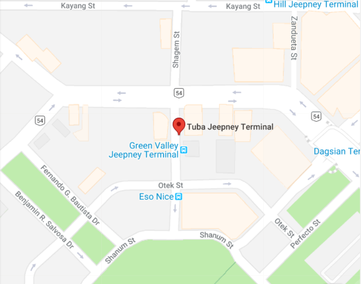

Dinosaur Island & Holy Land
Dinosaurs Island Baguio is Baguio Eco Park’s is the very first animatronics theme park in Benguet with life-size, animatronic dinosaurs scattered at the foothills of a mountain.Graceful dinosaur mascots entertain the crowd with their own choreography of upbeat songs. Aside from the beautiful, sweeping views of parts of Benguet, the cold climate also adds charm to the place. Holy Land is a one kilometer Biblical museum that features depictions of Bible stories from Old to New Testament. The stations within the park evoke an assortment of emotions - excitement, sorrow, serenity, triumph. Its ultimate goal is to help people in their search for the meaning of life and their journey to true happiness.
Green Valley Terminal

Tuba Terminal
-
You may ride:
Badiwan-Tuba Jeep
-
Fare rate:
Php 17.00